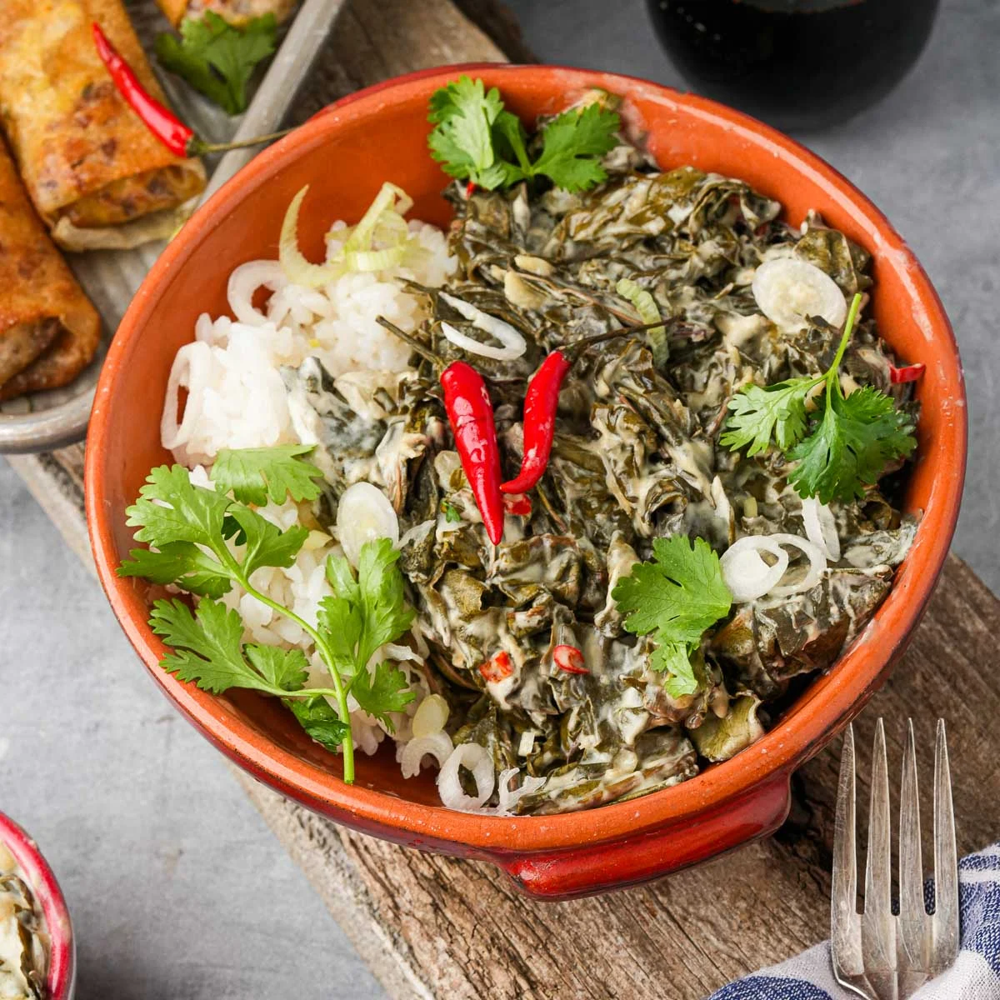
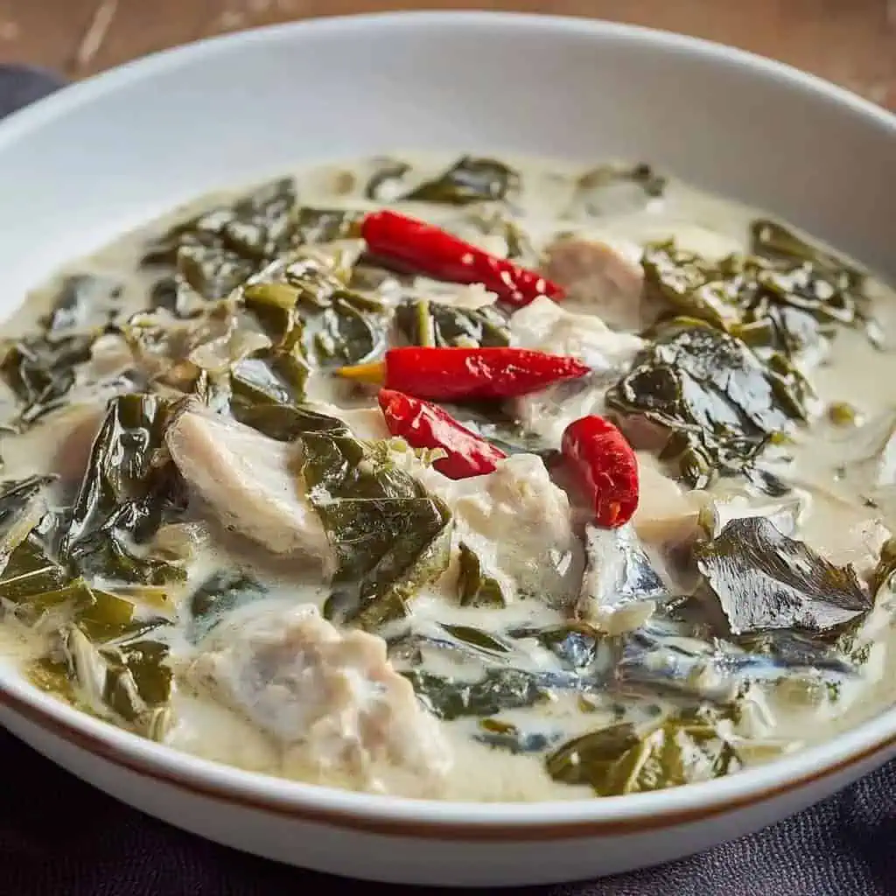
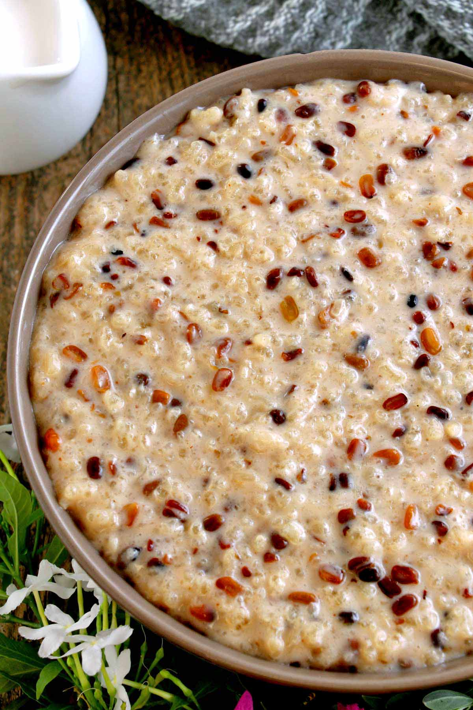
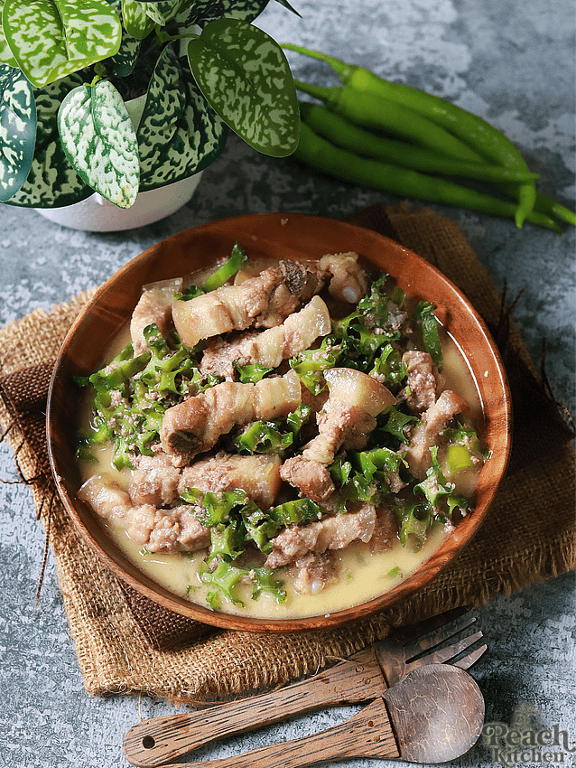
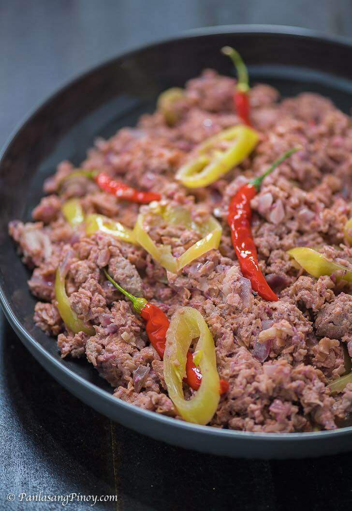
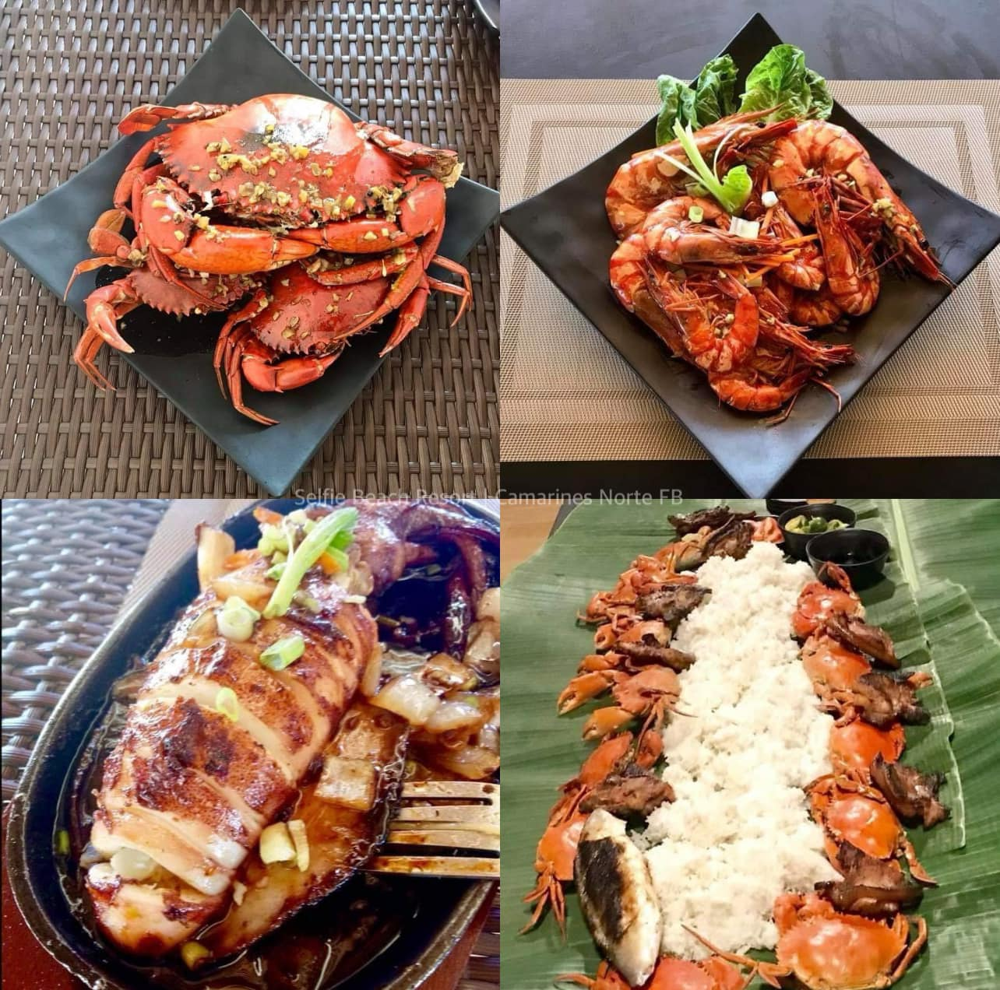

Discover the Beauty of the Land of Gold
Bicolano cuisine is known for its rich flavors, use of coconut milk, and spicy dishes. Visiting Camarines Norte means trying some of the best Bicolano food in the Philippines.

Dried taro leaves cooked in coconut milk with chili, shrimp paste, and sometimes pork or fish. A classic Bicolano dish that is spicy and creamy.
Read More →
Shredded stingray or shark meat cooked in coconut milk and malunggay leaves. It has a mild and creamy flavor with a slight spicy kick.
Read More →
A Bicolano snack made from toasted or roasted rice or corn. It is a simple and traditional meryenda (snack) enjoyed by locals.
Read More →
Pork cooked in coconut milk with lots of chili peppers and shrimp paste. One of the most well-known Bicolano dishes in the Philippines.
Read More →
A dish made with grated cotton fruit (santol) cooked in coconut milk with bagoong (fermented shrimp paste) and chili.
Read More →
Camarines Norte is a coastal province so fresh fish, crabs, shrimps, and squid are widely available in local markets and restaurants.
Read More →| Restaurant / Carinderia | Location | Known For |
|---|---|---|
| Local Carinderia (Turo-Turo) | Daet Public Market | Bicolano home-cooked meals |
| Seafood Restaurants near Bagasbas | Bagasbas Beach area | Fresh grilled seafood |
| Daet Town Restaurants | Along Vinzons Ave, Daet | Mixed Filipino and Bicolano dishes |